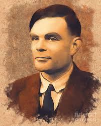

<!DOCTYPE html>
<html>
<head>
	<title>ALAN TURING</title>
	<meta charset="UTF8">
	<meta name="description" content="LIFE AND ACHIEVEMENT OF ALAN TURING">
	<meta name="keyword" content="ALAN TURING">
	<meta name="viewport" content="-width=device-width">
	<meta name="author" content="SAMRAT ASHOK">
	<meta name="viewport" content="width=20, initial-scale=1.0">
	<style>
		h1{text-align:center;}
		h3{text-align: center;}
		h4{text-shadow: currentColor;}
		p{text-align:justify;}
		p{border : solid; border-width: 3px; border-color: "transperent"; background-color: pink}
	  img{float:right;}
	  #img1{float: left;}
</head>
<body>
	
	<h1><mark><u>LIFE AND ACHIEVEMENT OF ALAN TURING</u></mark></h1><section>
		
		
		<nav>
		
		</nav>
		<div>
			
			<h4><u>BIOGRAPHY</u><ul>
				<ol>
					<li>EARLY LIFE</li>
					<li>BACKGROUNG</li>
					<li>ACHIEVEMENT</li>
				</ol>
			</h4>
		</div>
	</section>	
	<div>
		<hr width="100%">
		<p>
		Turing was born in Maida Vale, London,[2] while his father, Julius Mathison Turing (1873–1947), was on leave from his position with the Indian Civil Service (ICS) at Chhatrapur, then in the Madras Presidency and presently in Odisha state, in British India.[20][21] Turing's father was the son of a clergyman, the Rev. John Robert Turing, from a Scottish family of merchants that had been based in the Netherlands and included a baronet. Turing's mother, Julius' wife, was Ethel Sara Turing (née Stoney 1881–1976),[2] daughter of Edward Waller Stoney, chief engineer of the Madras Railways. The Stoneys were a Protestant Anglo-Irish gentry family from both County Tipperary and County Longford, while Ethel herself had spent much of her childhood in County Clare.
		</p>
		<hr>
		<p>TOP</p>
		<section>
		
		<p>
			
			<h3>TRUIENGERY</h3>
			In July 1942, Turing devised a technique termed Turingery (or jokingly Turingismus)[88] for use against the Lorenz cipher messages produced by the Germans' new Geheimschreiber (secret writer) machine. This was a teleprinter rotor cipher attachment codenamed Tunny at Bletchley Park. Turingery was a method of wheel-breaking, i.e., a procedure for working out the cam settings of Tunny's wheels.[89] He also introduced the Tunny team to Tommy Flowers who, under the guidance of Max Newman, went on to build the Colossus computer, the world's first programmable digital electronic computer, which replaced a simpler prior machine (the Heath Robinson), and whose superior speed allowed the statistical decryption techniques to be applied usefully to the messages.[90] Some have mistakenly said that Turing was a key figure in the design of the Colossus computer. Turingery and the statistical approach of Banburismus undoubtedly fed into the thinking about cryptanalysis of the Lorenz cipher,[91][92] but he was not directly involved in the Colossus development.
		</p>

		<h3>video for you</h3>
		<center>
				<video width="320" height="240" controls>
	  				<source src="v.mp4" type="video/mp4">
	  				
	  			</video>		
		</center>>
		<p>
			<h3>Pattern formation and mathematical biology</h3>
			In 1951, when Turing was 39 years old, he turned to mathematical biology, finally publishing his masterpiece "The Chemical Basis of Morphogenesis" in January 1952. He was interested in morphogenesis, the development of patterns and shapes in biological organisms. Among other things, he wanted to understand Fibonacci phyllotaxis, the existence of Fibonacci numbers in plant structures.[111] He suggested that a system of chemicals reacting with each other and diffusing across space, termed a reaction-diffusion system, could account for "the main phenomena of morphogenesis".[112] He used systems of partial differential equations to model catalytic chemical reactions. For example, if a catalyst A is required for a certain chemical reaction to take place, and if the reaction produced more of the catalyst A, then we say that the reaction is autocatalytic, and there is positive feedback that can be modelled by nonlinear differential equations. Turing discovered that patterns could be created if the chemical reaction not only produced catalyst A, but also produced an inhibitor B that slowed down the production of A. If A and B then diffused through the container at different rates, then you could have some regions where A dominated and some where B did. To calculate the extent of this, Turing would have needed a powerful computer, but these were not so freely available in 1951, so he had to use linear approximations to solve the equations by hand. Fortunately these calculations gave the right qualitative results, and produced, for example, a uniform mixture that oddly enough had regularly spaced fixed red spots. The Russian biochemist Boris Belousov had performed experiments with similar results, but could not get his papers published because of the contemporary prejudice that any such thing violated the second law of thermodynamics. Unfortunately Belousov was not aware of Turing's paper in the Philosophical Transactions of the Royal Society.
		</p>
	</section>
	</div>
	<footer style="color: black; text-align: center"><u>THE END</u></footer>
	
</body>
</html>
